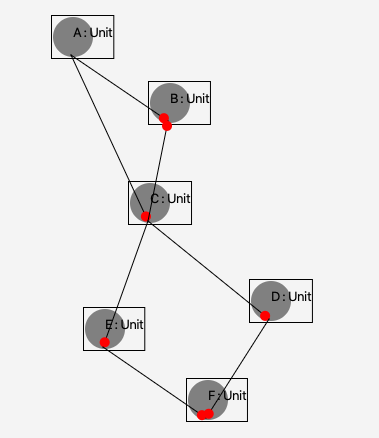
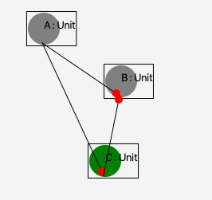

The last year I have thought a lot about keeping a codebase in a comprehendible state. The converse of this is a very big problem in software engineering, known as spaghetti code. I would also argue that a lot if not most of scalability issues come from not keeping the comprehendible state when adding code. This comprehendible state seems to vanish when having too much context to think about when reading code. To counter the unnecessary context, sometimes code can be separated into independent parts. We will define a method for separating some codebases in this article.
We will define a notion, which tells us when a node can be "collapsed". Collapsing a node means, that some of its imports (more specifically: its collapsables) will disappear. We do this to abstract a subgraph to a certain node.
Note that some imports of a node may not disappear, or sometimes even none of its imports may disappear! When a node N may disappear after a collapse of A, we say N is "collapsable" The rule defining whether or not a node is "collapsable" is the following: If a node A is collapsed, an import N of A is "collapsable" if
Context clusters divide a graph into a hierarchy of clusters, thus achieving hierarchical modularity. They are based on the notion of collapsables:
ContextCluster(A) = Collapse(A) \ Union(Collapse(N)), for all N in Collapse(A)
When writing code, we can translate this idea by viewing modules as nodes in a graph. This way we can use this notion of Context Clusters to separate certain modules in a hierarchical fashion. The amount of context one needs to know about when reading code is limited to all the modules in its Context Cluster. And because of this hierarchical modularity, the codebase can be any size, while the amount of context will not be affected by that size.
To make the case analysis, we'll study a screenshot from my own graph editor, which implements the notion of collapsables. The red dot at the end of an edge should be seen as the arrow head.
To demonstrate the ideas previously discussed, let's collapse C.
First, we look at D and E simultaneously, because they're analogous. There is a Normal Path from C to both of them. They both have the property that all of their reverse paths contain C. That's because every reverse path first hits C. They have the same import, which is F. Since the first two criteria are met, we now only need to verify that F (their only import) is also a collapsable. There exists a Normal path from C to F (two in fact, but that's irrelevant). All of it's Reverse Paths either can be extended to include C (the reverse paths F to D and F to E can both be extended to include C), or they contain C, (you can check this manually if you like). F doesn't have any imports, so the condition All imports for F are collapsable is true (see universal quantifiers over empty set if sceptical) Conclusion: we can say F is collapsable. Conclucion resting on previous conclusion: we can say D and E are collapsable.
if we now collapse C, all of its collapsables disappear, as shown below
Finally, you can manually verify that there are two context clusters in the (non-collapsed) graph. which are:
There are a lot of unanswered questions regarding context clusters. Here we provide an incomplete list of examples:
We have presented here a notion of Context Clusters. The theoretical interest lays in Context Clusters, as they have the property of hierarchical modularity. We want hierarchical modularity, because it means that the context needed to understand a cluster is unrelated to the size of the graph. The notion of Collapsables has two reasons:
We have here shown the use of Context Clusters in programming languages. But it should be noted that this translation of Context Clusters to software engineering told us to view code-modules as nodes. Finally, it should be noted that we only covered the basics here, and there is a lot of material to study further.